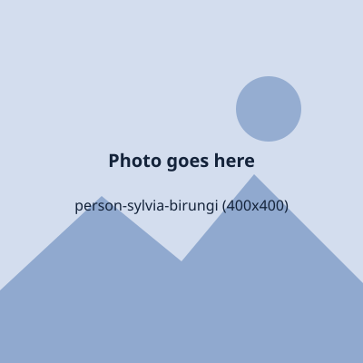
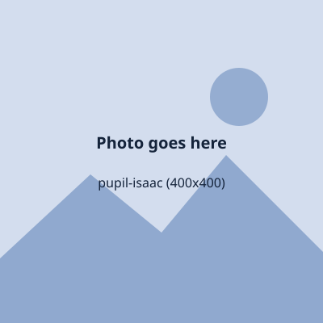

Inter-house sports day
Four houses, one field and a very loud finish in the relay.
Our Motto . .
Welcome to St.Francis High School, A day and boarding school in Namagoma for students from S.1 to S.6, where young people are determined to learn to think, lead and make good decisions.
At St. Francis High School every student is known by name, challenged to think and trusted to lead. We teach knowledge, character and good decisions together, in the classroom, the labs, the library and on the field, so that students arrive curious and leave ready for university, work and life.
The adults who lead the school day to day. Names are placeholders until the school adds its own.
Headteacher
Taught for over 20 years before leading the school. Visits a different classroom every Friday.
Deputy Headteacher, Academics
Looks after the curriculum, teaching quality and how we share progress with parents.
Deputy Headteacher, Administration
Keeps the school running smoothly, from the timetable to the daily routine.
Director of Studies
Plans the timetable, the exams and the mock-exam programme.
Head of Boarding (Warden)
Leads the wardens and matrons and looks after everything for boarders.
Head of Guidance and Counselling
Leads wellbeing, child protection and career guidance.
Head of Sports and Clubs
Plans games, inter-house sports and the clubs timetable.
Bursar
Looks after school fees, finance, catering and school transport.
Every class has a class teacher, and subject specialists teach the sciences, languages, ICT, music, art and PE.
Head of Sciences, Physics
Turns every physics lesson into an experiment, usually a loud one.
Chemistry
Believes a good lab coat and a steady hand can fix most problems.
Biology
Leads the biology field trip to Entebbe every year.
Biology and Agriculture
Runs the school garden that supplies the dining hall.
Head of Mathematics
Has a puzzle on the board before every lesson.
Mathematics
Coaches the maths quiz team to regional finals.
Computer Studies, lab manager
Runs the coding club and keeps the lab network humming.

Entrepreneurship and Subsidiary Mathematics
Helps students start small businesses with real customers.
Head of Languages, English and Literature
Leads the debate team and the reading challenge.
History and Political Education
Brings history alive with role play and local stories.
Geography
Plans the trip to Jinja and the Source of the Nile.
Luganda and Kiswahili
Teaches songs and proverbs along with the grammar.
Religious Education
Leads morning assembly with calm and good humour.
Music and choir master
Rehearses the choir until the hall rings.
Art and Design, Drama
Directs the school play and the art exhibition.
PE and games master
Runs inter-house sports day with a whistle and a stopwatch.
S.1 to S.6 students who lead by example, from the head prefects to every house and dormitory. Students are shown by first name only.
Head Prefect, S.6
I want every new student to feel welcome on their first day.

Head Prefect, S.6
I am looking forward to leading the school assembly.
Deputy Head Prefect, S.6
Deputy Head Prefect, S.6
Library prefect, S.5
Games prefect, S.6
Boarding prefect, S.6
Entertainment prefect, S.5
Health prefect, S.5
ICT prefect, S.6
Dining hall prefect, S.5
Discipline prefect, S.6
Every class chooses a class leader and a deputy each term, and gives jobs to everyone in turn.
students for every teacher in our practical lessons
books, journals and revision guides in the school library
computers in the computer lab for ICT and coding
clubs and societies, from debate to football
Figures are placeholders. Replace them with the school's real numbers.
Ask "why?" and then go and find out.
Show up, work hard and finish what you start.
Notice who needs a friend and be one.
Speak up, serve others and set the example.
Look after your books, your dorm and each other.
Of your school, your work and every classmate who succeeds.
Every decision you make today shapes who you become.
Our motto, Decisions Make You
Quiet study space, thousands of titles and a reading challenge every term.
Networked computers for ICT lessons, research, typing practice and coding club.
Leavers' prom, talent nights and house socials, planned by students with their teachers.